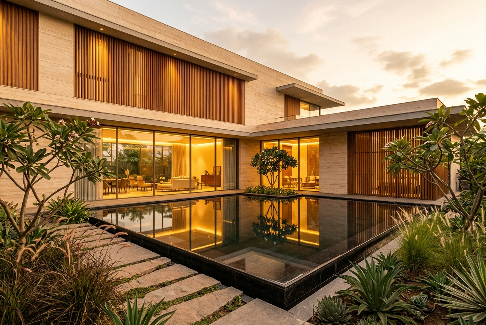

Current Belt · 01
Lothal Heritage Area
Strategic land & township development neighbouring the Lothal World Heritage Project.
Portfolio · 1991 – 2026
From foundational coastal townships in Porbandar to active & upcoming developments around Lothal, Dholera SIR, Dwarka, and Pipli (Ahmedabad) — spanning ₹2 crore to ₹100 crore.
Strategic land & township development neighbouring the Lothal World Heritage Project.
Five high-potential villages positioned around the Dholera Special Investment Region.

Next-phase coastal, smart-city, and Ahmedabad district projects under expansion.
Current Projects
Hover or select any active village below to inspect parcel focus across the Lothal heritage corridor and Dholera SIR belt.
Active · Lothal Belt
Working from the land up through bulk acquisition and plotted masterplanning directly in the high-growth Lothal World Heritage Project influence zone.
Five strategically connected growth villages encircling Dholera Special Investment Region — acquiring bulk land, developing civic frameworks, and scaling long-term equity.
Upcoming Projects
Four strategic upcoming destinations extending Arjan Odedra’s 1991–2026 Gujarat footprint into coastal, heritage, and smart-city corridors.
Upcoming · 01
01
Returning to Gujarat’s revered coastal horizon with serene residential, bungalow, and plotted estate living.
Next-generation plotted and commercial-residential developments inside India’s premier smart-city corridor.
Upcoming · 03
03
Phased expansion right alongside the Lothal World Heritage Project corridor with bulk land-up masterplanning.

Upcoming · 04 04Strategic land and township development along the vital Ahmedabad–Dholera connectivity spine.
Where He Has Worked · 1991 – 2026
Click or hover any location card to fly the interactive Gujarat map straight to that town or corridor.
Portfolio Scale · 7 Categories
Every project follows Arjan Odedra’s land-up model: bulk land acquisition, infrastructure development, and market delivery across seven categories.
Master-planned residential townships and plotted communities built from raw land across Gujarat.
Project Desk · Gujarat
Select a corridor below and connect directly with Rigima Crest Infra LLP on WhatsApp or call +91 88661 19598.